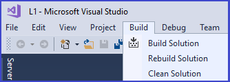

Building a Project
After creating a new project solution, adding files, and changing settings, you are now ready to build the project, which causes all the .cpp files to be compiled and a .exe file to be created

Click: Build | Build Solution
- When in Debug configuration, the executable file (i.e., the .exe file) will be generated by the build and stored in the project's Debug subfolder
- When in Release configuration, then the .exe will be stored in the project's Release subfolder